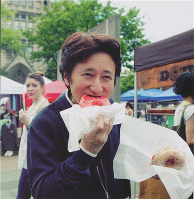

Meny
Delar
Manga
Stands
jojosdatabase
Info
Generell Info
Manga
Musik
Karaktärer
Stands
Färlagda paneler
Delar
Part 1. Phantom Blood
Part 2. Battle tendency
Part 3. Stardust Crusaders
Part 4. Diamond is Unbreakable
Part 5. Golden Wind
Part 6. Stone Ocean
Författare
Namn: Hirohiko Araki
Född: 7 juni 1960 (62 år) Sendai, Japan
Yrke: Manga artist (mangaka)
Period: 1980–nutid
Genre: Action, äventyr, övernaturligt
Ämne: Shōnen manga, seinen manga
Anmärkningsvärda verk: Baoh, JoJos bizarre adventure
Maka: Asami Araki
